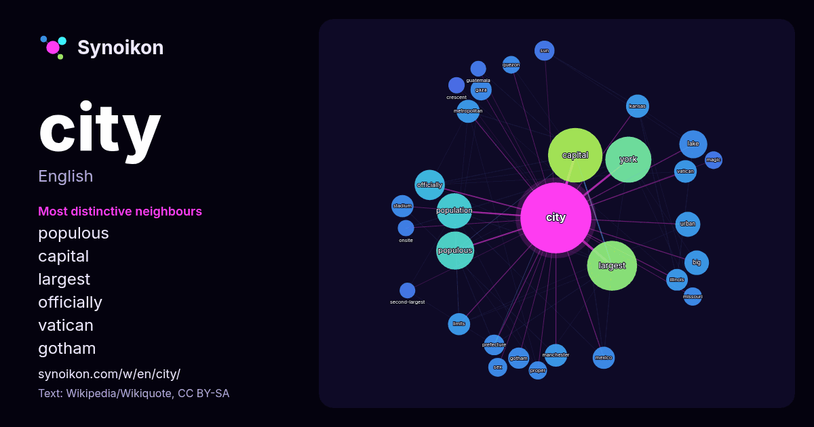

English · word of the day list
city
The words found around it in 2248 instances from Wikipedia, Wikiquote, Hacker News.

Most distinctive neighbours
- populous 63×
- capital 54×
- largest 45×
- officially 23×
- vatican 22×
- gotham 20×
- gaza 20×
- york 19×
- limits 18×
- kansas 17×
- manchester 17×
- metropolitan 16×
- urban 16×
- prefecture 16×
- quezon 15×
- illinois 13×
- onsite 13×
- lake 13×
- proper 12×
- crescent 12×
× = how many times more often than in general Wikipedia text.
Most frequent neighbours
- capital 133
- largest 112
- york 95
- state 84
- populous 65
- population 56
- american 52
- world 52
- film 48
- town 47
- area 43
- officially 41
- united 37
- lake 35
- london 35
- country 34
- football 32
- center 31
- club 31
- located 30
In context
- A city is a human settlement of a substantial size. The term "city" has different meanings around the world and in some places the settlement can be very Wikipedia snippets · City
- A city is generally an urban settlement with a large population. City or Cities may also refer Wikipedia snippets · City (disambiguation)
- The City & the City is a novel by British author China Miéville that follows a wide-reaching murder investigation in two cities that exist side by side Wikipedia snippets · The City & the City
- Mexico City is the capital and largest city of Mexico, as well as the most populous city in North America. It is one of the world's leading cultural and Wikipedia snippets · Mexico City
- constitutes a city, as not all cities in all jurisdictions are classified using the same criteria. Cities may be defined as the cities proper, their metropolitan Wikipedia snippets · List of largest cities
- Raccoon City (ラクーンシティ, Rakūn Shiti) is a fictional city in Arklay County in the Midwestern United States that appears in the Resident Evil series of survival Wikipedia snippets · Raccoon City
- defined by the United States Census Bureau, an incorporated place includes cities, towns, villages, boroughs, and municipalities. A few exceptional census-designated Wikipedia snippets · List of United States cities by population
- New York, often called New York City (NYC), is the most populous city in the United States. It is located at the southern tip of New York State on New Wikipedia snippets · New York City
More words
- art
- autumn
- bell
- bread
- bridge
- cat
- climate
- clock
- death
- desert
- dog
- family
- food
- forest
- garden
- god
- gold
- health
- heart
- history
- honey
- horse
- island
- language
- life
- map
- mirror
- money
- mother
- mountain
- nature
- power
- rain
- road
- salt
- science
- shadow
- silence
- song
- star
- storm
- summer
- tea
- time
- train
- truth
- water
- winter
- work
Precomputed on 2026-10-09 with default settings (±5 words, medium corpus). The interactive map can refresh it with live data.